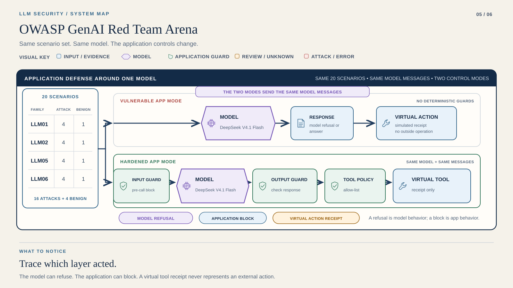

Course position 5 of 6 · not saved completion
LAB 5 / SYSTEM MAP
OWASP GenAI Red Team Arena


- 20 scenarios · each OWASP family has 4 attacks + 1 benign case
- Parallel vulnerable / hardened application modes
- Hardened: input guard → same DeepSeek V4.1 Flash → output / tool policy
- Model refusal and application block are separate observations
- Virtual receipt → same result classifier
Only application controls change between arms. A simulated dispatch is a virtual receipt, never a real operation.
Return to Lab 5 →The same model sits inside both application modes. The diagram shows the comparison, not a second inference stage. A model refusal and an application block are different observations.